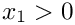
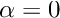
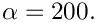
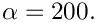

In this document we discuss the solution of time-harmonic acoustic fluid-structure interaction problems on unstructured meshes.
The sketch below shows the problem setup: A 2D elastic annulus which is reinforced with two T-ribs is immersed in a compressible fluid and subjected to a time-periodic pressure load of magnitude
The structure is symmetric and we only discretise the right half ( ) of the domain and apply symmetry conditions (zero horizontal displacement) on the  axis.
axis.
The figure below shows an animation of the structure's time-harmonic oscillation. The blue shaded region shows the shape of the oscillating structure while the pink region shows its initial configuration. The left half of the plot is used to show the (mirror image of the) adaptive unstructured mesh on which the solution was computed:
Here is a plot of the corresponding fluid displacement potential, a measure of the fluid pressure:
This looks very pretty and shows that we can solve acoustic FSI problems in non-trivial geometries but should you believe the results? Here's an attempt to convince you: If we make the rib much softer than the annulus and set its inertia to zero the rib will not offer much structural resistance and the annular region will deform as if the rib was not present. If we then set  we apply an axisymmetric forcing onto the structure and would expect the resulting displacement field (at least in the annular region) to be axisymmetric.
The animation of the displacement field for this case, shown below, shows that this is indeed the case:
Here is a plot of the corresponding fluid displacement potential, a measure of the fluid pressure:
#include "generic.h"
#include "helmholtz.h"
#include "time_harmonic_linear_elasticity.h"
#include "multi_physics.h"
#include "meshes/annular_mesh.h"
#include "meshes/triangle_mesh.h"
using namespace std;
using namespace oomph;
{
public:
MyStraightLine(
const Vector<double>& r_start,
const Vector<double>& r_end)
{ }
{
BrokenCopy::broken_copy("MyStraightLine");
}
{
BrokenCopy::broken_assign("MyStraightLine");
}
void position(
const Vector<double>& zeta, Vector<double>& r)
const
{
}
private:
};
{
Vector<TimeHarmonicIsotropicElasticityTensor*>
E_pt;
{
}
const Vector<double> &n,
Vector<std::complex<double> >&traction)
{
double phi=atan2(x[1],x[0]);
double magnitude=exp(-
Alpha*pow(phi-0.25*MathematicalConstants::Pi,2));
unsigned dim = traction.size();
for(unsigned i=0;i<dim;i++)
{
traction[i] = complex<double>(-magnitude*
P*n[i],magnitude*
P*n[i]);
}
}
}
template<class ELASTICITY_ELEMENT, class HELMHOLTZ_ELEMENT>
{
public:
private:
};
template<class ELASTICITY_ELEMENT, class HELMHOLTZ_ELEMENT>
{
Vector<double> r_start(2);
Vector<double> r_end(2);
double r_outer = 1.0;
double rib_thick=0.05;
double rib_depth=0.2;
double t_width=0.2;
double t_thick=0.05;
double half_phi_rib=asin(0.5*rib_thick/r_inner);
TriangleMeshClosedCurve* closed_curve_pt=0;
Vector<TriangleMeshCurveSection*> curvilinear_boundary_pt;
Ellipse* outer_boundary_circle_pt = new Ellipse(r_outer,r_outer);
double zeta_start=-0.5*MathematicalConstants::Pi;
double zeta_end=0.5*MathematicalConstants::Pi;
unsigned nsegment=50;
unsigned boundary_id=curvilinear_boundary_pt.size();
curvilinear_boundary_pt.push_back(
new TriangleMeshCurviLine(
outer_boundary_circle_pt,zeta_start,zeta_end,nsegment,boundary_id));
Outer_boundary_id=boundary_id;
r_start[0]=0.0;
r_start[1]=r_outer;
r_end[0]=0.0;
r_end[1]=r_inner;
zeta_start=0.0;
zeta_end=1.0;
nsegment=1;
boundary_id=curvilinear_boundary_pt.size();
curvilinear_boundary_pt.push_back(
new TriangleMeshCurviLine(
upper_sym_pt,zeta_start,zeta_end,nsegment,boundary_id));
Upper_symmetry_boundary_id=boundary_id;
Ellipse* upper_inner_boundary_pt =
new Ellipse(r_inner,r_inner);
zeta_start=0.5*MathematicalConstants::Pi;
zeta_end=half_phi_rib;
nsegment=20;
boundary_id=curvilinear_boundary_pt.size();
curvilinear_boundary_pt.push_back(
new TriangleMeshCurviLine(
upper_inner_boundary_pt,
zeta_start,zeta_end,nsegment,boundary_id));
Upper_inner_boundary_id=boundary_id;
TriangleMeshCurviLine* upper_inward_rib_curviline_pt=0;
Vector<TriangleMeshOpenCurve*> inner_boundary_pt;
TriangleMeshCurviLine* lower_inward_rib_curviline_pt=0;
Vector<double> rib_center(2);
r_start[0]=r_inner*cos(half_phi_rib);
r_start[1]=r_inner*sin(half_phi_rib);
r_end[0]=r_start[0]-rib_depth;
r_end[1]=r_start[1];
zeta_start=0.0;
zeta_end=1.0;
nsegment=1;
boundary_id=curvilinear_boundary_pt.size();
upper_inward_rib_curviline_pt=
new TriangleMeshCurviLine(
upper_inward_rib_pt,zeta_start,zeta_end,nsegment,boundary_id);
curvilinear_boundary_pt.push_back(upper_inward_rib_curviline_pt);
r_start[0]=r_end[0];
r_start[1]=r_end[1];
r_end[0]=r_start[0];
r_end[1]=r_start[1]+0.5*(t_width-rib_thick);
zeta_start=0.0;
zeta_end=1.0;
nsegment=1;
boundary_id=curvilinear_boundary_pt.size();
curvilinear_boundary_pt.push_back(
new TriangleMeshCurviLine(
vertical_upper_t_rib_pt,zeta_start,zeta_end,nsegment,boundary_id));
r_start[0]=r_end[0];
r_start[1]=r_end[1];
r_end[0]=r_start[0]-t_thick;
r_end[1]=r_start[1];
zeta_start=0.0;
zeta_end=1.0;
nsegment=1;
boundary_id=curvilinear_boundary_pt.size();
curvilinear_boundary_pt.push_back(
new TriangleMeshCurviLine(
horizontal_upper_t_rib_pt,zeta_start,zeta_end,nsegment,boundary_id));
r_start[0]=r_end[0];
r_start[1]=r_end[1];
r_end[0]=r_start[0];
r_end[1]=-r_start[1];
zeta_start=0.0;
zeta_end=1.0;
nsegment=1;
boundary_id=curvilinear_boundary_pt.size();
curvilinear_boundary_pt.push_back(
new TriangleMeshCurviLine(
inner_vertical_rib_pt,zeta_start,zeta_end,nsegment,boundary_id));
r_start[0]=r_end[0];
r_start[1]=r_end[1];
r_end[0]=r_start[0]+t_thick;
r_end[1]=r_start[1];
zeta_start=0.0;
zeta_end=1.0;
nsegment=1;
boundary_id=curvilinear_boundary_pt.size();
curvilinear_boundary_pt.push_back(
new TriangleMeshCurviLine(
horizontal_lower_t_rib_pt,zeta_start,zeta_end,nsegment,boundary_id));
r_start[0]=r_end[0];
r_start[1]=r_end[1];
r_end[0]=r_start[0];
r_end[1]=r_start[1]+0.5*(t_width-rib_thick);
zeta_start=0.0;
zeta_end=1.0;
nsegment=1;
boundary_id=curvilinear_boundary_pt.size();
curvilinear_boundary_pt.push_back(
new TriangleMeshCurviLine(
vertical_lower_t_rib_pt,zeta_start,zeta_end,nsegment,boundary_id));
r_end[0]=r_inner*cos(half_phi_rib);
r_end[1]=-r_inner*sin(half_phi_rib);
r_start[0]=r_end[0]-rib_depth;
r_start[1]=r_end[1];
zeta_start=0.0;
zeta_end=1.0;
nsegment=1;
boundary_id=curvilinear_boundary_pt.size();
lower_inward_rib_curviline_pt=
new TriangleMeshCurviLine(
lower_inward_rib_pt,zeta_start,zeta_end,nsegment,boundary_id);
curvilinear_boundary_pt.push_back(lower_inward_rib_curviline_pt);
Ellipse* lower_inner_boundary_circle_pt = new Ellipse(r_inner,r_inner);
zeta_start=-half_phi_rib;
zeta_end=-0.5*MathematicalConstants::Pi;
nsegment=20;
boundary_id=curvilinear_boundary_pt.size();
curvilinear_boundary_pt.push_back(
new TriangleMeshCurviLine(
lower_inner_boundary_circle_pt,zeta_start,zeta_end,nsegment,boundary_id));
Lower_inner_boundary_id=boundary_id;
r_start[0]=0.0;
r_start[1]=-r_inner;
r_end[0]=0.0;
r_end[1]=-r_outer;
zeta_start=0.0;
zeta_end=1.0;
nsegment=1;
boundary_id=curvilinear_boundary_pt.size();
curvilinear_boundary_pt.push_back(
new TriangleMeshCurviLine(
lower_sym_pt,zeta_start,zeta_end,nsegment,boundary_id));
Lower_symmetry_boundary_id=boundary_id;
closed_curve_pt=
new TriangleMeshClosedCurve(curvilinear_boundary_pt);
Vector<TriangleMeshCurveSection*> internal_polyline_pt(1);
r_start[0]=r_inner*cos(half_phi_rib);
r_start[1]=r_inner*sin(half_phi_rib);
r_end[0]=r_inner*cos(half_phi_rib);
r_end[1]=-r_inner*sin(half_phi_rib);
Vector<Vector<double> > boundary_vertices(2);
boundary_vertices[0]=r_start;
boundary_vertices[1]=r_end;
boundary_id=100;
TriangleMeshPolyLine* rib_divider_pt=
new TriangleMeshPolyLine(boundary_vertices,boundary_id);
internal_polyline_pt[0]=rib_divider_pt;
Rib_divider_boundary_id=boundary_id;
double s_connect=0.0;
internal_polyline_pt[0]->connect_initial_vertex_to_curviline(
upper_inward_rib_curviline_pt,s_connect);
s_connect=1.0;
internal_polyline_pt[0]->connect_final_vertex_to_curviline(
lower_inward_rib_curviline_pt,s_connect);
inner_boundary_pt.push_back(new TriangleMeshOpenCurve(internal_polyline_pt));
rib_center[0]=r_inner-rib_depth;
rib_center[1]=0.0;
TriangleMeshParameters triangle_mesh_parameters(closed_curve_pt);
triangle_mesh_parameters.element_area()=0.2;
triangle_mesh_parameters.internal_open_curves_pt()=inner_boundary_pt;
triangle_mesh_parameters.add_region_coordinates(1,rib_center);
Solid_mesh_pt=new
RefineableTriangleMesh<ELASTICITY_ELEMENT>(triangle_mesh_parameters);
double a=1.0;
bool periodic=false;
double azimuthal_fraction=0.5;
double phi=MathematicalConstants::Pi/2.0;
Helmholtz_mesh_pt = new
RefineableTwoDAnnularMesh<HELMHOLTZ_ELEMENT>
(periodic,azimuthal_fraction,
ntheta_helmholtz,nr_helmholtz,a,h_thick_helmholtz,phi);
Solid_mesh_pt->spatial_error_estimator_pt()=new Z2ErrorEstimator;
Helmholtz_mesh_pt->spatial_error_estimator_pt()=new Z2ErrorEstimator;
Helmholtz_outer_boundary_mesh_pt = new Mesh;
complete_problem_setup();
unsigned n_element =Helmholtz_mesh_pt->nelement();
for(unsigned i=0;i<n_element;i++)
{
HELMHOLTZ_ELEMENT *el_pt =
dynamic_cast<HELMHOLTZ_ELEMENT*>(Helmholtz_mesh_pt->element_pt(i));
}
Solid_mesh_pt->output("solid_mesh.dat");
Helmholtz_mesh_pt->output("helmholtz_mesh.dat");
Solid_mesh_pt->output_boundaries("solid_mesh_boundary.dat");
Helmholtz_mesh_pt->output_boundaries("helmholtz_mesh_boundary.dat");
Solid_traction_mesh_pt=new Mesh;
create_solid_traction_elements();
FSI_traction_mesh_pt=new Mesh;
create_fsi_traction_elements();
Helmholtz_fsi_flux_mesh_pt=new Mesh;
create_helmholtz_fsi_flux_elements();
create_helmholtz_ABC_elements();
add_sub_mesh(Solid_mesh_pt);
add_sub_mesh(Solid_traction_mesh_pt);
add_sub_mesh(FSI_traction_mesh_pt);
add_sub_mesh(Helmholtz_mesh_pt);
add_sub_mesh(Helmholtz_fsi_flux_mesh_pt);
add_sub_mesh(Helmholtz_outer_boundary_mesh_pt);
build_global_mesh();
setup_interaction();
oomph_info << "Number of unknowns: " << assign_eqn_numbers() << std::endl;
char filename[100];
sprintf(filename,"%s/trace.dat",Doc_info.directory().c_str());
Trace_file.open(filename);
}
template<class ELASTICITY_ELEMENT, class HELMHOLTZ_ELEMENT>
{
delete_face_elements(Solid_traction_mesh_pt);
delete_face_elements(FSI_traction_mesh_pt);
delete_face_elements(Helmholtz_fsi_flux_mesh_pt);
delete_face_elements(Helmholtz_outer_boundary_mesh_pt);
rebuild_global_mesh();
}
template<class ELASTICITY_ELEMENT, class HELMHOLTZ_ELEMENT>
{
complete_problem_setup();
create_solid_traction_elements();
create_fsi_traction_elements();
create_helmholtz_fsi_flux_elements();
create_helmholtz_ABC_elements();
setup_interaction();
rebuild_global_mesh();
}
template<class ELASTICITY_ELEMENT, class HELMHOLTZ_ELEMENT>
{
{
unsigned n_node = Solid_mesh_pt->nboundary_node(Upper_symmetry_boundary_id);
for(unsigned i=0;i<n_node;i++)
{
Node* nod_pt=Solid_mesh_pt->boundary_node_pt(Upper_symmetry_boundary_id,i);
nod_pt->pin(0);
nod_pt->set_value(0,0.0);
nod_pt->pin(2);
nod_pt->set_value(2,0.0);
}
}
{
unsigned n_node = Solid_mesh_pt->nboundary_node(Lower_symmetry_boundary_id);
for(unsigned i=0;i<n_node;i++)
{
Node* nod_pt=Solid_mesh_pt->boundary_node_pt(Lower_symmetry_boundary_id,i);
nod_pt->pin(0);
nod_pt->set_value(0,0.0);
nod_pt->pin(2);
nod_pt->set_value(2,0.0);
}
}
unsigned nreg=Solid_mesh_pt->nregion();
for (unsigned r=0;r<nreg;r++)
{
unsigned nel=Solid_mesh_pt->nregion_element(r);
for (unsigned e=0;e<nel;e++)
{
ELASTICITY_ELEMENT *el_pt =
dynamic_cast<ELASTICITY_ELEMENT*>(Solid_mesh_pt->
region_element_pt(r,e));
}
}
}
template<class ELASTICITY_ELEMENT, class HELMHOLTZ_ELEMENT>
{
unsigned n_element = boundary_mesh_pt->nelement();
for(unsigned e=0;e<n_element;e++)
{
delete boundary_mesh_pt->element_pt(e);
}
boundary_mesh_pt->flush_element_and_node_storage();
}
template<class ELASTICITY_ELEMENT, class HELMHOLTZ_ELEMENT>
{
unsigned b=0;
unsigned nb=3;
for (unsigned i=0;i<nb;i++)
{
switch(i)
{
case 0:
b=Upper_inner_boundary_id;
break;
case 1:
b=Lower_inner_boundary_id;
break;
case 2:
b=Rib_divider_boundary_id;
break;
}
unsigned r=0;
unsigned n_element = Solid_mesh_pt->nboundary_element_in_region(b,r);
for(unsigned e=0;e<n_element;e++)
{
ELASTICITY_ELEMENT* bulk_elem_pt = dynamic_cast<ELASTICITY_ELEMENT*>(
Solid_mesh_pt->boundary_element_in_region_pt(b,r,e));
int face_index = Solid_mesh_pt->face_index_at_boundary_in_region(b,r,e);
TimeHarmonicLinearElasticityTractionElement<ELASTICITY_ELEMENT>* el_pt=
new TimeHarmonicLinearElasticityTractionElement<ELASTICITY_ELEMENT>
(bulk_elem_pt,face_index);
Solid_traction_mesh_pt->add_element_pt(el_pt);
el_pt->set_boundary_number_in_bulk_mesh(b);
}
}
}
template<class ELASTICITY_ELEMENT, class HELMHOLTZ_ELEMENT>
{
unsigned b=Outer_boundary_id;
unsigned n_element = Solid_mesh_pt->nboundary_element(b);
for(unsigned e=0;e<n_element;e++)
{
ELASTICITY_ELEMENT* bulk_elem_pt = dynamic_cast<ELASTICITY_ELEMENT*>(
Solid_mesh_pt->boundary_element_pt(b,e));
int face_index = Solid_mesh_pt->face_index_at_boundary(b,e);
TimeHarmonicLinElastLoadedByHelmholtzPressureBCElement
<ELASTICITY_ELEMENT,HELMHOLTZ_ELEMENT>* el_pt=
new TimeHarmonicLinElastLoadedByHelmholtzPressureBCElement
<ELASTICITY_ELEMENT,HELMHOLTZ_ELEMENT>(bulk_elem_pt,
face_index);
FSI_traction_mesh_pt->add_element_pt(el_pt);
el_pt->set_boundary_number_in_bulk_mesh(b);
}
}
template<class ELASTICITY_ELEMENT, class HELMHOLTZ_ELEMENT>
{
unsigned b=0;
unsigned n_element = Helmholtz_mesh_pt->nboundary_element(b);
for(unsigned e=0;e<n_element;e++)
{
HELMHOLTZ_ELEMENT* bulk_elem_pt = dynamic_cast<HELMHOLTZ_ELEMENT*>(
Helmholtz_mesh_pt->boundary_element_pt(b,e));
int face_index = Helmholtz_mesh_pt->face_index_at_boundary(b,e);
HelmholtzFluxFromNormalDisplacementBCElement
<HELMHOLTZ_ELEMENT,ELASTICITY_ELEMENT>* el_pt=
new HelmholtzFluxFromNormalDisplacementBCElement
<HELMHOLTZ_ELEMENT,ELASTICITY_ELEMENT>(bulk_elem_pt,
face_index);
Helmholtz_fsi_flux_mesh_pt->add_element_pt(el_pt);
el_pt->set_boundary_number_in_bulk_mesh(b);
}
}
template<class ELASTICITY_ELEMENT, class HELMHOLTZ_ELEMENT>
{
unsigned b=2;
unsigned n_element = Helmholtz_mesh_pt->nboundary_element(b);
for(unsigned e=0;e<n_element;e++)
{
HELMHOLTZ_ELEMENT* bulk_elem_pt = dynamic_cast<HELMHOLTZ_ELEMENT*>(
Helmholtz_mesh_pt->boundary_element_pt(b,e));
int face_index = Helmholtz_mesh_pt->face_index_at_boundary(b,e);
HelmholtzAbsorbingBCElement<HELMHOLTZ_ELEMENT>* flux_element_pt = new
HelmholtzAbsorbingBCElement<HELMHOLTZ_ELEMENT>(bulk_elem_pt,face_index);
Helmholtz_outer_boundary_mesh_pt->add_element_pt(flux_element_pt);
}
}
template<class ELASTICITY_ELEMENT, class HELMHOLTZ_ELEMENT>
{
unsigned boundary_in_helmholtz_mesh=0;
ofstream the_file;
the_file.open("boundary_coordinate_hh.dat");
Helmholtz_mesh_pt->Mesh::doc_boundary_coordinates<HELMHOLTZ_ELEMENT>
(boundary_in_helmholtz_mesh, the_file);
the_file.close();
Multi_domain_functions::setup_bulk_elements_adjacent_to_face_mesh
<HELMHOLTZ_ELEMENT,2>
(this,boundary_in_helmholtz_mesh,Helmholtz_mesh_pt,FSI_traction_mesh_pt);
unsigned boundary_in_solid_mesh=Outer_boundary_id;
the_file.open("boundary_coordinate_solid.dat");
Solid_mesh_pt->Mesh::template doc_boundary_coordinates<ELASTICITY_ELEMENT>
(boundary_in_solid_mesh, the_file);
the_file.close();
Multi_domain_functions::setup_bulk_elements_adjacent_to_face_mesh
<ELASTICITY_ELEMENT,2>(
this,boundary_in_solid_mesh,Solid_mesh_pt,Helmholtz_fsi_flux_mesh_pt);
}
template<class ELASTICITY_ELEMENT, class HELMHOLTZ_ELEMENT>
{
ofstream some_file,some_file2;
char filename[100];
unsigned n_plot=5;
sprintf(filename,"%s/power%i.dat",Doc_info.directory().c_str(),
Doc_info.number());
some_file.open(filename);
double power=0.0;
unsigned nn_element=Helmholtz_outer_boundary_mesh_pt->nelement();
for(unsigned e=0;e<nn_element;e++)
{
HelmholtzBCElementBase<HELMHOLTZ_ELEMENT> *el_pt =
dynamic_cast<HelmholtzBCElementBase<HELMHOLTZ_ELEMENT>*>(
Helmholtz_outer_boundary_mesh_pt->element_pt(e));
power += el_pt->global_power_contribution(some_file);
}
some_file.close();
oomph_info << "Step: " << Doc_info.number()
<< " density ratio (annulus) ="
<< " density ratio (rib) ="
<< " Total radiated power " << power << "\n"
<< std::endl;
<< power << " "
<< std::endl;
std::ostringstream case_string;
case_string << "TEXT X=10,Y=90, T=\"Q="
<< ", k<sup>2</sup> = "
<< ", density ratio = "
<< ", omega_sq = "
<< "\"\n";
sprintf(filename,"%s/elast_soln%i.dat",Doc_info.directory().c_str(),
Doc_info.number());
some_file.open(filename);
Solid_mesh_pt->output(some_file,n_plot);
some_file.close();
sprintf(filename,"%s/solid_traction_soln%i.dat",Doc_info.directory().c_str(),
Doc_info.number());
some_file.open(filename);
Solid_traction_mesh_pt->output(some_file,n_plot);
some_file.close();
sprintf(filename,"%s/traction_soln%i.dat",Doc_info.directory().c_str(),
Doc_info.number());
some_file.open(filename);
FSI_traction_mesh_pt->output(some_file,n_plot);
some_file.close();
sprintf(filename,"%s/flux_bc_soln%i.dat",Doc_info.directory().c_str(),
Doc_info.number());
some_file.open(filename);
Helmholtz_fsi_flux_mesh_pt->output(some_file,n_plot);
some_file.close();
sprintf(filename,"%s/helmholtz_soln%i.dat",Doc_info.directory().c_str(),
Doc_info.number());
some_file.open(filename);
Helmholtz_mesh_pt->output(some_file,n_plot);
some_file << case_string.str();
some_file.close();
unsigned nreg=Solid_mesh_pt->nregion();
for (unsigned r=0;r<nreg;r++)
{
sprintf(filename,"%s/region%i_%i.dat",Doc_info.directory().c_str(),
r,Doc_info.number());
some_file.open(filename);
unsigned nel=Solid_mesh_pt->nregion_element(r);
for (unsigned e=0;e<nel;e++)
{
FiniteElement* el_pt=Solid_mesh_pt->region_element_pt(r,e);
el_pt->output(some_file,n_plot);
}
some_file.close();
}
unsigned nstep=40;
for (unsigned i=0;i<nstep;i++)
{
sprintf(filename,"%s/helmholtz_animation%i_frame%i.dat",
Doc_info.directory().c_str(),
Doc_info.number(),i);
some_file.open(filename);
double phi=2.0*MathematicalConstants::Pi*double(i)/double(nstep-1);
unsigned nelem=Helmholtz_mesh_pt->nelement();
for (unsigned e=0;e<nelem;e++)
{
HELMHOLTZ_ELEMENT* el_pt=dynamic_cast<HELMHOLTZ_ELEMENT*>(
Helmholtz_mesh_pt->element_pt(e));
el_pt->output_real(some_file,phi,n_plot);
}
some_file.close();
}
<< Doc_info.number() << ")\n";
Doc_info.number()++;
}
int main(
int argc,
char **argv)
{
CommandLineArgs::setup(argc,argv);
CommandLineArgs::specify_command_line_flag("--dir",
CommandLineArgs::specify_command_line_flag("--alpha",
CommandLineArgs::specify_command_line_flag("--el_multiplier",
CommandLineArgs::specify_command_line_flag("--outer_radius",
CommandLineArgs::specify_command_line_flag("--validation");
unsigned max_adapt=3;
CommandLineArgs::specify_command_line_flag("--max_adapt",&max_adapt);
CommandLineArgs::parse_and_assign();
CommandLineArgs::doc_specified_flags();
<TTimeHarmonicLinearElasticityElement<2,3> >,
RefineableQHelmholtzElement<2,3> > problem;
unsigned nstep=3;
if (CommandLineArgs::command_line_flag_has_been_set("--validation"))
{
nstep=1;
max_adapt=2;
}
for(unsigned i=0;i<nstep;i++)
{
problem.newton_solve(max_adapt);
problem.doc_solution();
if (i==0)
{
}
if (i==1)
{
}
}
}
int main(int argc, char **argv)
Driver for acoustic fsi problem.
unsigned Rib_divider_boundary_id
HelmholtzDtNMesh< HELMHOLTZ_ELEMENT > * Helmholtz_outer_boundary_mesh_pt
Pointer to mesh containing the DtN elements.
void create_fsi_traction_elements()
Create FSI traction elements.
Mesh * Helmholtz_fsi_flux_mesh_pt
Pointer to mesh of Helmholtz FSI flux elements.
void create_solid_traction_elements()
Create solid traction elements.
void create_helmholtz_fsi_flux_elements()
Create Helmholtz FSI flux elements.
void actions_before_newton_solve()
Update function (empty)
Mesh * Solid_traction_mesh_pt
Pointer to mesh of solid traction elements.
unsigned Lower_symmetry_boundary_id
Boundary ID of lower symmetry boundary.
void complete_problem_setup()
Complete problem setup: Apply boundary conditions and set physical properties.
void delete_face_elements(Mesh *const &boundary_mesh_pt)
Delete (face) elements in specified mesh.
ofstream Trace_file
Trace file.
unsigned Lower_inner_boundary_id
Boundary ID of lower inner boundary.
void actions_before_adapt()
Actions before adapt: Wipe the mesh of traction elements.
void actions_after_adapt()
Actions after adapt: Rebuild the mesh of traction elements.
CoatedDiskProblem()
Constructor:
void actions_after_newton_solve()
Update function (empty)
TreeBasedRefineableMeshBase * Solid_mesh_pt
Pointer to solid mesh.
unsigned Upper_symmetry_boundary_id
Boundary ID of upper symmetry boundary.
DocInfo Doc_info
DocInfo object for output.
unsigned Outer_boundary_id
Boundary ID of outer boundary.
void setup_interaction()
Setup interaction.
TreeBasedRefineableMeshBase * Helmholtz_mesh_pt
Pointer to Helmholtz mesh.
void create_helmholtz_ABC_elements()
Create ABC face elements.
unsigned Upper_inner_boundary_id
Boundary ID of upper inner boundary.
Mesh * FSI_traction_mesh_pt
Pointer to mesh of FSI traction elements.
void doc_solution()
Doc the solution.
////////////////////////////////////////////////////////////////////
Vector< double > R_start
Start point of line.
MyStraightLine(const Vector< double > &r_start, const Vector< double > &r_end)
Constructor: Pass start and end points.
void operator=(const MyStraightLine &)
Broken assignment operator.
~MyStraightLine()
Destructor: Empty.
void position(const Vector< double > &zeta, Vector< double > &r) const
Position Vector at Lagrangian coordinate zeta.
Vector< double > R_end
End point of line.
/////////////////////////////////////////////////////////////////// /////////////////////////////////...
void pressure_load(const Vector< double > &x, const Vector< double > &n, Vector< std::complex< double > > &traction)
Pressure load (real and imag part)
double Nu
Poisson's ratio.
string Directory
Output directory.
double P
Uniform pressure.
unsigned El_multiplier
Multiplier for number of elements.
double Density_ratio
Density ratio: solid to fluid.
Vector< TimeHarmonicIsotropicElasticityTensor * > E_pt
The elasticity tensors for the two regions.
double Outer_radius
Radius of outer boundary of Helmholtz domain.
double K_squared
Square of wavenumber for the Helmholtz equation.
void update_parameter_values()
Function to update dependent parameter values.
unsigned ABC_order
Order of absorbing/appproximate boundary condition.
double H_coating
Non-dim thickness of elastic coating.
double Omega_sq
Non-dim square of frequency for solid – dependent variable!
double Alpha
Peakiness parameter for pressure load.
 is the polar angle) along its inner surface. The parameter
is the polar angle) along its inner surface. The parameter  controls the "sharpness" of the pressure load. For
controls the "sharpness" of the pressure load. For  we obtain a uniform, axisymmetric load; the sketch below shows the pressure distribution (red vectors indicating the traction) for 
we obtain a uniform, axisymmetric load; the sketch below shows the pressure distribution (red vectors indicating the traction) for 